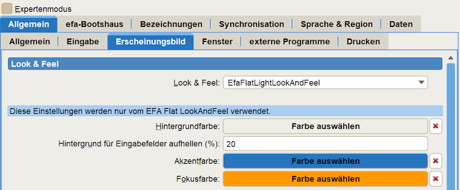
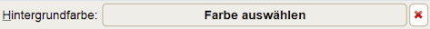
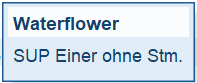

Configuration of the Look&Feel
Table of contents
General
In Java, a Look&Feel defines the way the interface is displayed. This includes
- Coloring
- Font and style used
- Representation of surface elements with edges or rounded corners.
From a technical point of view, EFA basically supports all standard look and feels defined in Java. The most common Java looks are “Metal”, “Nimbus” and “Motif”, although the “Windows” and “WindowsClassic” looks are also available under Windows. The “GTK” look is only available under Linux.
The Metal Look&Feel works best because it supports all of EFA's features well. This particularly includes the colored buttons on the efaBootsHaus homepage. The Metal Look&Feel font is easy to read on the screen. The Metal Look&Feel font is easy to read on the screen.
The Nimbus Look&Feelworks less well because it has some problems when displaying the logbook in efaBootshaus. The Windows Look&Feel, on the other hand, does not support colored buttons, and the tabs are not well highlighted either.
Windows/WindowsClassic and GTK Look&Feel used their own fonts, which changed the display of EFA again.
EFA FlatLaf
All the Look&Feel of standard Java are now getting old and no longer seem modern. In addition, every look and feel other than metal has technical or display-specific difficulties.
Therefore, a new look and feel was developed for EFA 2.4, which is based on the open source library FlatLaf based.
Essential Features
- optimized for good visibility of screen contents
- large screen elements, e.g. scrollbars (easy to hit)
- current look with rounded corners
- customizable in terms of color
During development, care was taken to ensure that as many of the coloring properties as possible could also be used in the other standard Java looks.
Whether this works depends heavily on the respective standard Java looks. The Windows LookAndFeel lacks the ability to set the color of the current tab in a user-specific manner.
Configuration
How efaBootshaus is displayed can be configured in two different areas in EFA:
- Configuration → General → Appearance
These are the properties that affect all efa programs. E.g. efaBase, efaBths, etc.
Here, in particular, the color scheme is determined, as well as basic information about the screen and the positioning of the EFA window on it.
- Configuration → efa-Boat House → Appearance
These properties only affect efa-Boat House.
In order to produce an optimal result for efaBootshaus, adjustments are required in both areas.
Common -> Appearance

In this tab the LookAndFeel is set for the following EFA programs:
- efaBase
- efaBootshaus
- emil
Look&Feel
This property sets the basic representation of efa. The list of available looks depends on the operating system you choose. The GTK Look&Feel, for example, is only available under Linux, while the Windows Looks are only available under Windows operating systems. The “standard” is determined from the Java specifications for the respective operating system on which EFA runs. On Windows the default is Windows LookAndFeel, on Linux it is “GTK”.
The Metal Look and the newly developed efaFlatLight Look work best for efaBase and efaBths .
Colors for efaFlatLaf
The standard color scheme for efaFlatLaf is intended to enable optimal visibility of the screen contents.
The individual colors can be adjusted by pressing the “Select color” button. Pressing the red “X” behind it resets the color to the efaFlatLaf standard.

- Background color
The background color for all masks.
The Flatlaf is programmed to assume a light background color. This can also be chosen relatively dark. efaFlatLaf currently does not support a true “dark mode”.
Note: If the “Start journey” dialog was already open before the background color was changed, it will only adopt the new background color after an efa restart. It is recommended to always restart efa after completing coloring changes, even though most changes affect EFA immediately after closing the config dialog.
- Lighten background for input fields (%)
This configuration property applies to buttons, input fields, list fields, table backgrounds. These should stand out from the actual background color.
Here you can set how much brighter the input fields/buttons/… should be. For a very light color, 8% is enough; for a darker color, you can also enter 15% or 20% here.
The default value is 10.
- Accent color
The accent color is used as the basis for all scroll bars, selected entries in lists and for tabs.
- Focus color
The Flatlaf can highlight the interface element that currently has the input focus with a colored frame. Typically this should be a relatively light color so that it is noticeable.
A good choice is if the focus color is the complementary color to the accent color.
Headers
- Highlight headings
Highlight headings of the boat lists in the main window of efaBootshaus, as well as the headings within efaConfig and individual list elements when maintaining boats and people.
- Highlight tab titles
The active tab can be highlighted in color. This setting only affects the Metal Look and the WindowsClassic Look.
- Headings background color
This should be a dark color. It looks good when the heading color is identical to the accent color of efaFlatLaf.
- Headings text color
This should be a light color, such as white.
The text color is also used to display the border around the headings.
Table colors
These properties work in all look and feel.
- Table Header Background Color
Used for better highlighting the table headings.
This color should be characterized by a darker tone compared to the background of the alternating lines.
- Table Header Foreground Color
If the heading background color is relatively light, this setting should be “black” and if it is relatively dark, to “white”.
- Alternating Color
Tables can have every other row with a different background color.
efa assumes that the background color is light and the font color is always black. Therefore, only the background of the alternating lines can be set here.
- Selected row Background Color
This color should clearly stand out from the table heading color and the background for the alternating rows.
- Selected row Foreground Color
If the background color for the selected line is rather dark, a white font color should be selected here.
Table representation
These settings apply to all Look&Feels.
- Tables: Show tooltip if column is cut off
Efa works even on relatively small monitors. This means that table contents cannot always be displayed completely. If this setting is active, a tool tip with the full text is displayed when the mouse is hovered over truncated text.
Note: at efaBths, the duration until the tool tip appears is set via “efa-Boat House → Appearance”.
- Use alternating row color in tables
Give every other row of the table an alternative background color.
- Tables: Find entries with special characters more easily
If the function is active, the following applies: If the search field below a table is filled with text containing only Latin letters, the table will also find entries with umlauts. The search term „Andre“ also matches on en entry „André“.
However, if at least one umlaut is entered in the search field, an explicit search will be made for entries that contain this umlaut.
This feature can be configured separately for
- ables (off by default),
- Boathouse lists in efaBths (on by default, see Efa-Boat House→Appearance→Boat List Filter Fields in Expert Mode)
- Popup lists for boat names, people, etc. (on by default, see General→Input→Popup window for element selection in expert mode)
Tooltips
These properties work in every look and feel.
The background color of the tooltip cannot be set in Nimbus Look&Feel.

- Use custom colors for Tooltips
If this function is switched off, the standard colors of the respective look and feel are used.
- Tooltip background color
Default background color of all tooltips in efa.
- Tooltip foreground color
Default text color of all tool tips in efa. .
In FlatLaf, this color is also used for the frame of the tool tip.
- Tooltip header background color
This setting is currently only used by efaBootshaus, but is intended for several areas in the future. This heading color should contrast slightly with the default background color. It is not recommended to choose a dark background color here, as this has a very dominant effect on tool tips.
This setting is applied even if “Tooltips with custom coloring” is turned off.
- Tooltip header foreground color
This setting is currently only used by efaBootshaus, but is intended for several areas in the future. The text color should be identical to the standard tooltip text color.
This setting is applied even if “Tooltips with custom coloring” is turned off.
Font for efaBase
These properties can be used for all look and feel.
The properties only work in efaBase, not in other efa programs.
A font size of 14 points is recommended.
How to change the colors of FlatLaf
Pressing the “Select Color” button opens the standard Java color selection dialog.
Themes for FlatLaf
Flatlaf brighter, darker
Flatlaf brighter
| Property | Hex-Color code for use in RGB tab |
| Background | F4F3EF |
| Lighten background for edit fields | 8% |
Flatlaf darker
| Property | Hex-Color code for use in RGB tab |
| Background | E5E3D9 |
| Lighten background for edit fields | 14% |
Nimbus
A Nimbus-like coloring can be achieved using the following color codes:
| Property | Hex-Color code for use in RGB tabe |
| Background | D6D9DF |
| Lighten background for edit fields | 20% |
| Accent Color | 5388BA |
| Headings background | 7E9CB8 |
| Table Header Background | 6190BB |
| Alternating row color | D8E3ED |
| Table selection color | 5E86AA |
| Tooltip Background | E0EAF4 |
| Tooltip Header Background | EFF4F9 |
| Tooltip text color | 15416A |
Metal
a Metal-like coloring can be achieved using the following color codes:
| Property | Hex-Color code for use in RGB tab |
| Background | EEEEEE |
| Lighten background for edit fields | 10% |
| Accent Color | 4878A5 |
| Headings background | 4878A5 |
| Table Header Background | B1C7DC |
| Alternating row color | DBEAF9 |
| Table selection color | 4878A5 |
| Tooltip Background | E0EDF9 |
| Tooltip Header Background | FAFCFE |
| Tooltip text color | 15416A |